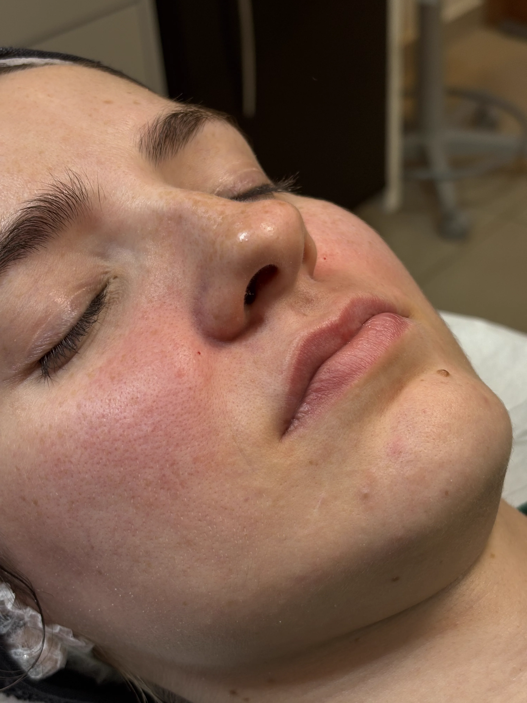
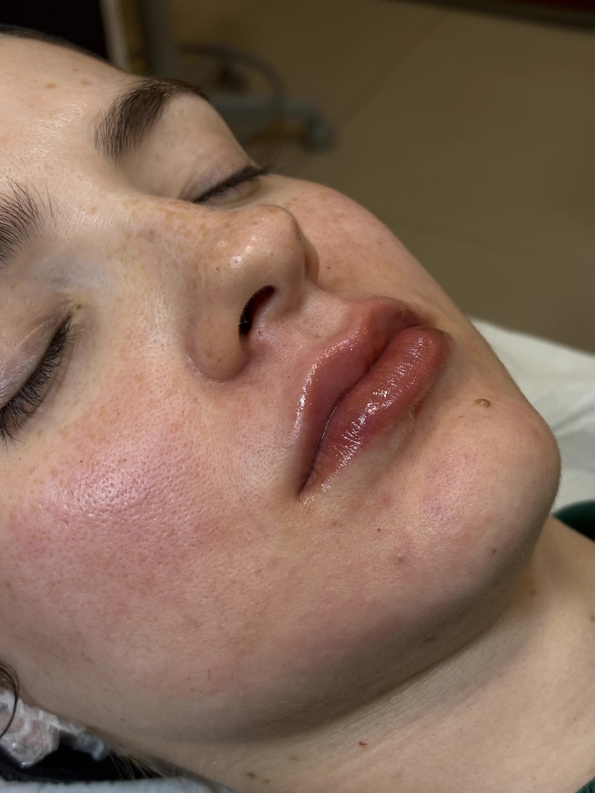
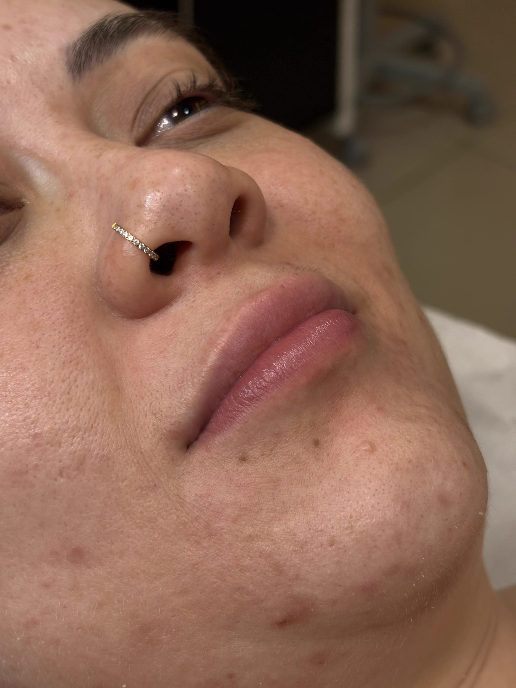
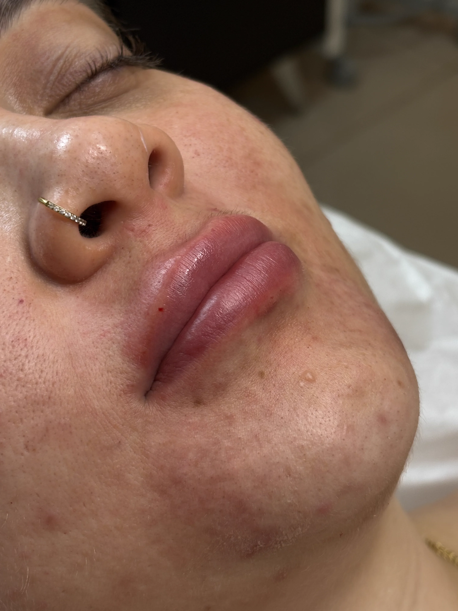
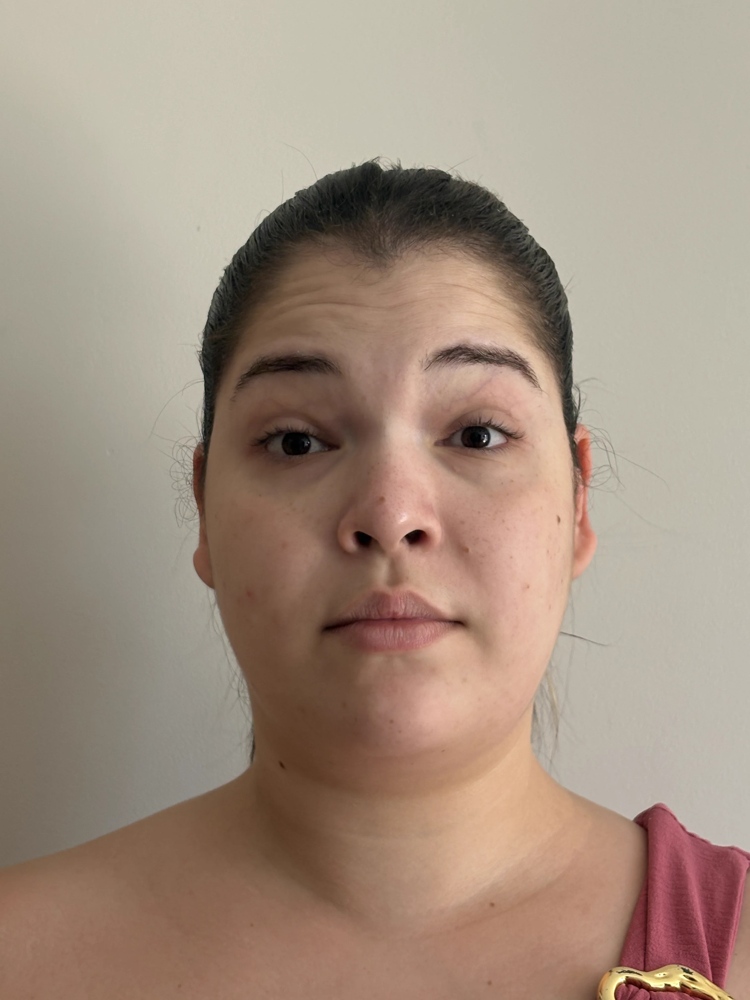
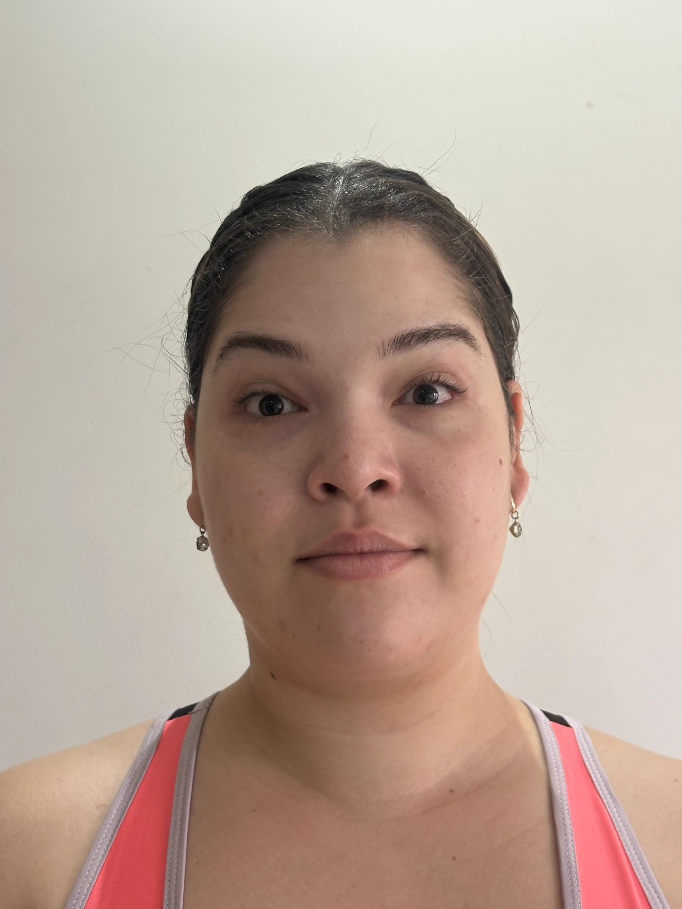

Procedimento
Harmonização facial natural
Procedimentos que respeitam a sua expressão, a sua anatomia e o seu tempo.
O que é
Harmonização facial com foco em naturalidade, sem excessos, respeitando os traços de cada rosto.
Como funciona
- Avaliação e escuta
- Planejamento individual
- Procedimentos definidos com você
- Acompanhamento
O que esperar
Resultados naturais, respeitando a sua expressão. O resultado é individual e pode variar.
Resultados
Resultados reais, com autorização e sem identificação das pacientes. Cada resultado é individual e pode variar.
Preenchimento labial

Antes
Depois
Antes
DepoisFull face
Botox

Antes
DepoisO próximo passo é uma avaliação.
Agendar avaliação